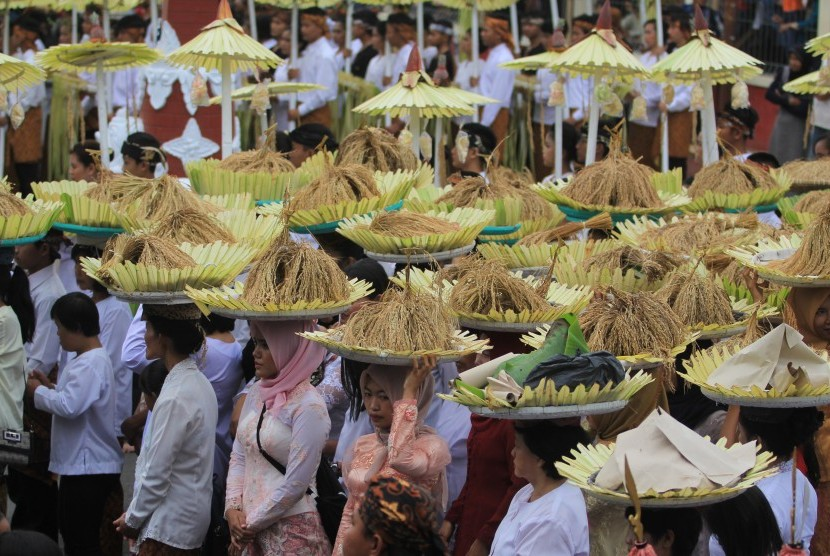
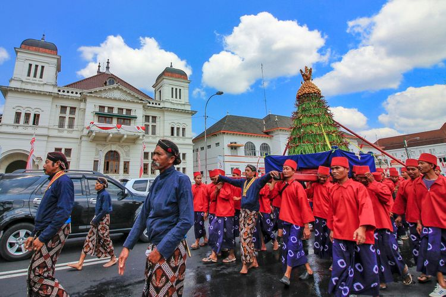
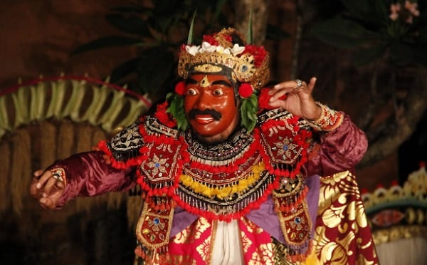
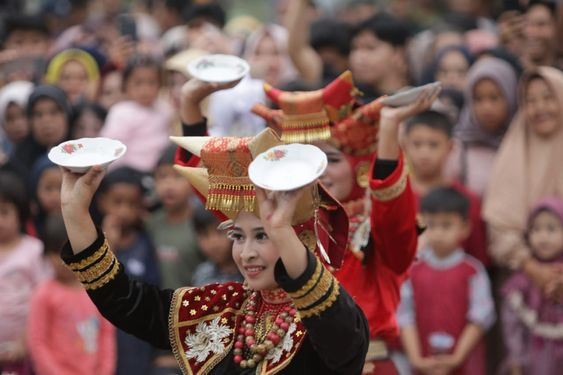
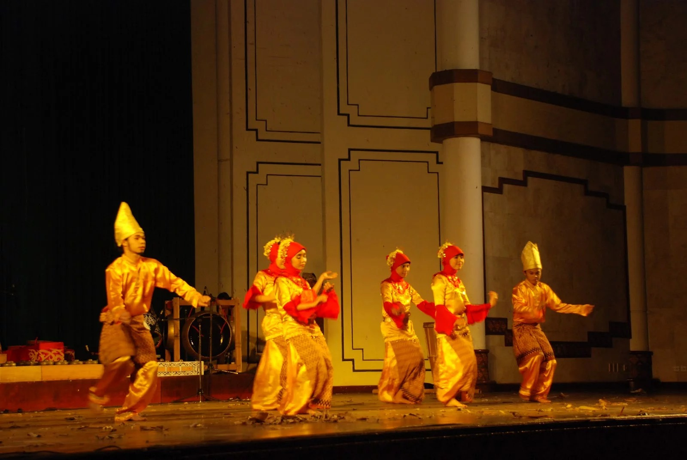
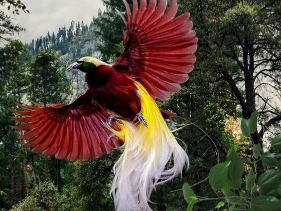
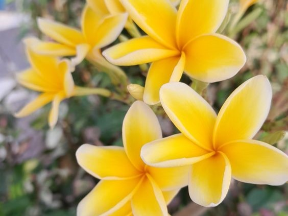
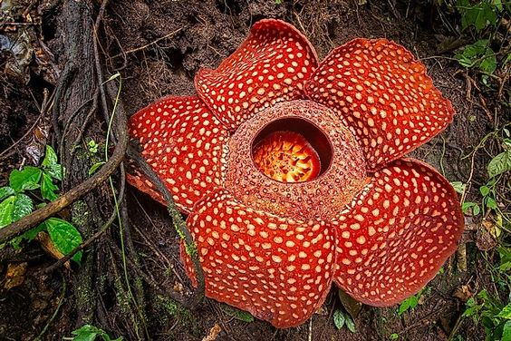
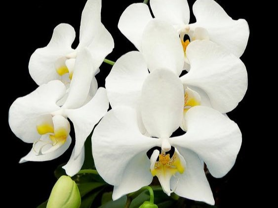

Budaya
Karya Seni
Flora dan Fauna
Makanan Khas
UPACARA SEREN

Upacara Seren adalah tradisi budaya suku Dayak di Kalimantan, Indonesia. Biasanya dilakukan sebagai ungkapan rasa syukur atas panen yang melimpah atau dalam konteks perayaan kehidupan sehari-hari. Upacara ini melibatkan nyanyian, tarian, dan musik tradisional Dayak, seperti gong dan seruling. Pemuka adat atau sesepuh suku memainkan peran penting dalam memimpin dan memandu jalannya upacara. Seren sering kali diikuti oleh seluruh komunitas sebagai bentuk kebersamaan dan menjalin hubungan sosial yang erat. Upacara ini tidak hanya sebagai bentuk perayaan, tetapi juga sebagai sarana untuk menjaga dan melestarikan warisan budaya suku Dayak.
UPACARA SIRAMAN
Upacara siraman adalah tradisi budaya dalam masyarakat Indonesia, terutama Jawa, yang dilakukan dalam konteks pernikahan atau kehamilan. Dalam upacara ini, calon pengantin atau ibu hamil disiram dengan air bunga oleh keluarga atau sesepuh sebagai simbol membersihkan dan memberikan berkah. Siraman juga dianggap sebagai upaya memohon restu dari leluhur dan Tuhan agar perjalanan hidup yang baru dimulai dapat berjalan lancar. Air yang digunakan dalam siraman sering kali berasal dari tujuh macam bunga, melambangkan tujuh tahapan kehidupan yang harus dilalui. Upacara siraman bukan hanya rangkaian ritual, tetapi juga mencerminkan nilai-nilai kebersamaan dan penghormatan terhadap tradisi leluhur.
UPACARA GREBEK

Upacara Grebek adalah tradisi budaya Jawa yang dilakukan di Indonesia, khususnya di Yogyakarta dan Surakarta. Grebek sering terkait dengan perayaan hari besar agama Islam, seperti Maulid Nabi Muhammad. Dalam upacara ini, sultan atau raja bersama keluarga dan kerabatnya membuka istana atau tempat tinggal mereka bagi masyarakat umum. Tujuan utama Grebek adalah memperkuat hubungan antara penguasa dan rakyat serta menyebarkan keberkahan dan kebahagiaan kepada seluruh komunitas. Pada acara ini, masyarakat dapat berkumpul, menerima berkah, dan menyaksikan berbagai pertunjukan tradisional seperti wayang kulit atau tarian. Upacara Grebek mencerminkan nilai kebersamaan dan keterbukaan penguasa terhadap rakyatnya.
TARI KECAK

Tari Kecak adalah jenis tarian tradisional Bali yang terkenal karena diiringi oleh vokal dan irama vokal "cak" yang dihasilkan oleh sekelompok penari laki-laki. Tarian ini biasanya menceritakan episode-episode dari epik Ramayana, seperti pertempuran antara Rama dan Ravana. Pementasan Tari Kecak melibatkan puluhan atau bahkan ratusan penari yang duduk berjejer membentuk lingkaran sambil mengangkat tangan mereka dan bersama-sama menghasilkan suara "cak". Tarian ini menciptakan suasana dramatis dengan gerakan yang kuat dan ritmis, menciptakan pengalaman visual dan auditori yang mengesankan. Tari Kecak sering dipertunjukkan sebagai bagian dari kegiatan seni dan budaya di Bali, dan telah menjadi daya tarik wisata yang populer di pulau tersebut.
TARI PIRING

Tari Piring adalah tarian tradisional Minangkabau dari Sumatera Barat, Indonesia, yang menonjolkan keahlian penari dalam menari sambil membawa sejumlah piring di tangan. Tarian ini biasanya diiringi oleh musik tradisional seperti talempong atau gong. Setiap penari menggenggam beberapa piring dalam kedua tangan dan kemudian menari dengan menggerakkan piring-piring tersebut secara lincah dan berkoordinasi. Tari Piring sering ditarikan dalam berbagai upacara adat, perayaan, atau acara sosial untuk menggambarkan keceriaan, kekompakan, dan semangat gotong-royong masyarakat Minangkabau. Keunikan tarian ini terletak pada keterampilan penari dalam menjaga keseimbangan dan menghindari pecahan piring sambil menampilkan gerakan yang dinamis dan indah. Tari Piring juga menjadi salah satu warisan budaya yang dijaga dan dilestarikan oleh masyarakat Minangkabau.
TARI TANDAK

Tari Tandak adalah tarian tradisional Indonesia yang berasal dari suku Minangkabau di Sumatera Barat. Tarian ini biasanya dilakukan oleh sekelompok penari perempuan yang mengenakan busana adat Minang. Gerakan dalam Tari Tandak melibatkan langkah-langkah yang anggun dan tangan yang dihias dengan perhiasan tradisional. Tari Tandak sering dipertunjukkan dalam berbagai upacara adat, seperti pernikahan dan penyambutan tamu penting. Keindahan dan keanggunan gerakan dalam Tari Tandak mencerminkan kekayaan budaya serta nilai-nilai tradisional yang dijunjung tinggi oleh masyarakat Minangkabau.
BINTURONG
Binturong (Arctictis binturong) adalah mamalia yang termasuk dalam keluarga Viverridae, yang terkait dengan musang dan luwak. Hewan ini dikenal juga sebagai "bearcat" meskipun tidak terkait dengan beruang atau kucing. Binturong memiliki ciri khas seperti moncong panjang, telinga kecil, dan ekor yang panjang dan tebal. Bulu binturong berwarna hitam atau coklat tua dengan ujung ekor yang berwarna putih. Mereka umumnya ditemukan di hutan-hutan Asia Tenggara dan dikenal sebagai hewan yang arboreal, sering menghabiskan waktu di atas pohon.
BURUNG CENDRAWASIH

Burung cendrawasih adalah kelompok burung yang terkenal dengan bulu-bulu berwarna cerah dan ekor yang panjang. Mereka terutama ditemukan di Papua, Indonesia, serta di beberapa pulau di sekitarnya. Burung cendrawasih memiliki beragam spesies, dan masing-masing spesies memiliki corak bulu yang unik. Beberapa spesies cendrawasih memiliki bulu yang sangat panjang dan hiasan khas yang digunakan untuk atraksi kawin dan menarik perhatian. Cendrawasih merupakan burung pemakan buah, serangga, dan nektar, dan keberadaannya dilindungi karena ancaman perburuan dan hilangnya habitat alami mereka.
BUNGA KAMBOJA

Bunga kamboja adalah bunga yang sangat populer dan memiliki nilai simbolis yang tinggi, terutama di Asia Tenggara. Bunga ini berasal dari genus Plumeria dan dikenal karena keharumannya yang khas. Bunga kamboja sering dihubungkan dengan keindahan, kesucian, dan keagungan, dan sering digunakan dalam upacara keagamaan dan perayaan. Tumbuhan kamboja memiliki daun yang lebar dan berbentuk elips, serta bunga yang sering kali berwarna putih atau kuning dengan aroma yang harum. Pohon kamboja tumbuh subur di iklim tropis dan subtropis, memberikan keindahan estetis di taman, taman pemakaman, atau sebagai tanaman hias di pekarangan.
BUNGA RAFFLESIA

Bunga Rafflesia adalah jenis bunga yang terkenal karena memiliki ukuran besar dan aroma yang kuat. Rafflesia arnoldii, yang berasal dari Indonesia, merupakan bunga terbesar di dunia dan dapat mencapai diameter lebih dari satu meter. Bunga ini dikenal sebagai bunga bangkai karena aroma busuknya, yang menyerupai bau daging busuk, dimaksudkan untuk menarik lalat penyerbuk. Rafflesia tumbuh pada tanaman inang tertentu, terutama anggota suku tumbuhan tertentu di hutan hujan Indonesia. Meskipun keindahannya terbatas pada masa berbunga yang singkat, Rafflesia menjadi daya tarik utama bagi para wisatawan dan pecinta alam yang mengunjungi wilayah-wilayah di mana bunga ini dapat ditemukan.
BUNGA ANGGREK

Bunga anggrek merupakan kelompok bunga yang sangat beragam dan terdiri dari ribuan spesies yang tersebar di seluruh dunia, terutama di daerah tropis. Anggrek dikenal karena kecantikan dan keragaman bentuk serta warna bunganya. Bunga anggrek dapat ditemukan dalam berbagai ukuran, mulai dari yang kecil hingga yang besar, dan memiliki beragam pola dan kombinasi warna yang menarik. Beberapa anggrek tumbuh di tanah, sementara yang lain epifit, hidup di batang pohon atau bebatuan. Anggrek juga memiliki peran penting dalam budaya dan seni, sering menjadi simbol keindahan dan kesuburan dalam banyak masyarakat.